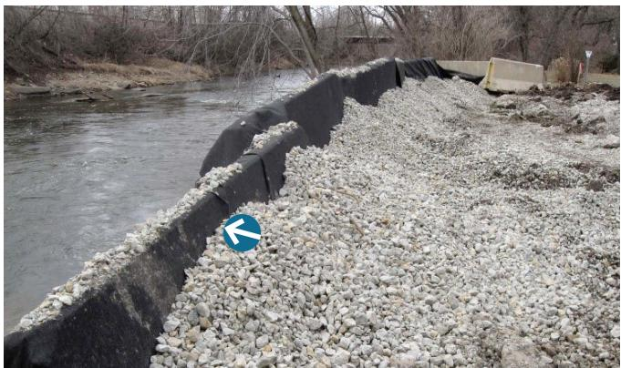
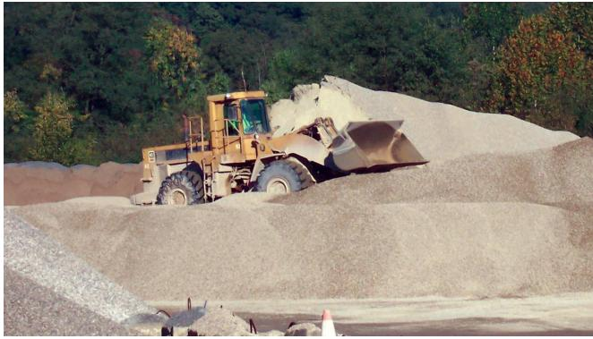
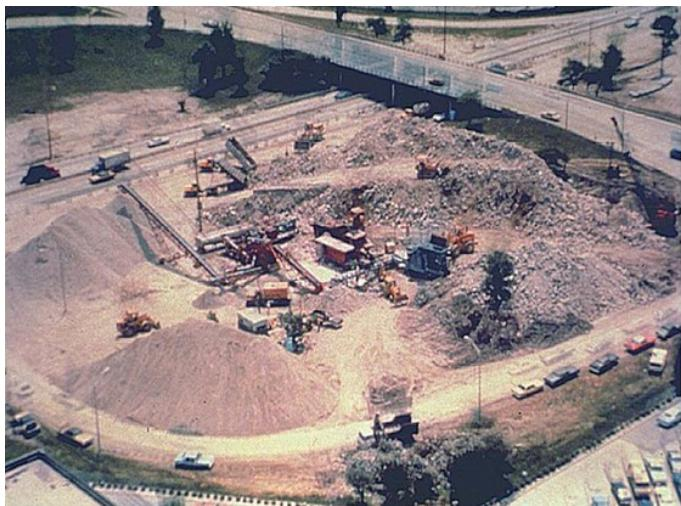
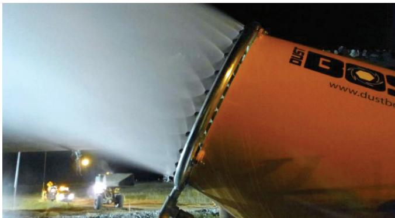

Concrete Recycling Air Quality Impact
Concrete Recycling Air Quality Impact is a decision‑making framework that guides how concrete‑recycling operations are configured—whether crushing and grading occur on‑site or off‑site, how stockpiles are designed, and which dust‑control and respiratory‑protection measures are employed—to achieve the lowest possible air‑quality impacts for surrounding communities and workers [2]. It addresses the generation of airborne particulates, especially respirable crystalline silica, that can breach EPA air‑quality standards and OSHA’s silica rule, requiring engineering controls such as water sprays, dust‑collection hoods, and speed‑limited haulage to meet regulatory limits [2][3]. By evaluating site layout, wind conditions, proximity to sensitive receptors, haul distances, and applicable statutes, the concept ensures compliance with the Clean Air Act, local ordinances, and occupational health requirements while supporting sustainable reuse of reclaimed concrete aggregate [2].
Sources (3)
Purpose and decision context
The Concrete Recycling Air Quality Impact concept is intended to guide the decision on how concrete‑recycling operations are configured—whether crushing and grading are performed on‑site versus off‑site, how stockpiles are designed and managed, and which dust‑control and respiratory‑protection measures are applied—to achieve the lowest possible air‑quality impacts. By evaluating site layout, wind conditions, proximity to sensitive receptors, haul distances, and regulatory requirements, stakeholders can select the option that best mitigates dust, emissions, noise, and traffic concerns. [2]
[2] — Ch. 7 (pp. 78–82)
The guides identify that concrete recycling must address the problem of air‑quality degradation caused by fugitive dust and emissions from crushing, processing, and hauling equipment, and also note that the concrete recycling process faces the problem of uncontrolled particulate matter and greenhouse‑gas emissions that degrade local air quality and can breach statutory limits. The core issue is the generation of airborne particulates—including respirable crystalline silica—that can jeopardize community health, violate local noise and dust ordinances, and breach national standards such as the Clean Air Act and OSHA’s silica rule. Consequently, the performance goal is to control these emissions to meet EPA‑mandated air‑quality standards and protect occupational health while maintaining regulatory conformity. [2][3]
[2] — Ch. 4 (p. 47), Ch. 7 (pp. 70–82); [3] — Ch. 5 (pp. 48–52)
Scope and applicability
The guidance indicates that Concrete Recycling Air Quality Impact is appropriate for construction‑type projects in which existing concrete pavement is reclaimed and processed into unbound recycled concrete aggregate (RCA) base layers. It is most pertinent when the asset condition involves a deteriorated concrete slab slated for demolition or reconstruction, and during the construction phase where breaking, crushing, and screening activities generate dust and noise. Accordingly, designers should incorporate dust‑abatement measures such as water sprays or collection hoods and schedule noisy operations within permitted time windows. [2]
The figure below illustrates a typical off-site concrete pavement recycling operation where such activities occur.
 Typical on-site mobile concrete pavement recycling operation [2]
Typical on-site mobile concrete pavement recycling operation [2]
The image displays a heavy industrial setup featuring a yellow excavator breaking up concrete slabs and feeding them into a large red mobile crushing plant. A white tanker truck is positioned near the machinery, likely providing water sprays to control dust generated during the processing of reclaimed concrete aggregate (RCA).
[2] — Ch. 4 (p. 47), Ch. 7 (p. 82)
When a recycling project is located in an urban environment where breaking and crushing generate noise and dust that cannot be kept within local ordinance limits, on‑site concrete recycling is not appropriate; the need to abate excessive noise by restricting work hours or to implement costly dust control measures can render the process impractical. Likewise, when the source concrete is suspected or shown to contain hazardous contaminants—such as asbestos, chemicals, metals, or sealants—or when it comes from projects with unknown service histories, recycling should be avoided because the material could release pollutants and affect air quality; disposal or remediation is preferred. Additionally, when the recycling location lies adjacent to sensitive receptors—such as residential populations, schools, hospitals, or vulnerable ecosystems—and/or prevailing wind conditions are likely to cause uncontrolled dust blow‑off, the air‑quality benefits of on‑site crushing become outweighed by potential dust and emission exposure. In each of these scenarios a different approach is preferable: send material to an off‑site facility with better containment, blend recycled aggregate with virgin material, select a site with natural sheltering features, or forgo recycling altogether. [2]
The following figure illustrates a well-implemented on-site material crushing program in an urban area.
 On-site concrete recycling operation in an urban environment with dust control measures. [2]
On-site concrete recycling operation in an urban environment with dust control measures. [2]
The image displays a large pile of broken concrete rubble situated directly beneath the support columns of a highway overpass, indicating an active demolition or processing site within an urban setting. A black silt fence runs along the perimeter of the dirt path next to the rubble pile, serving as a physical barrier designed to contain dust and sediment from migrating into the adjacent grassy area.
[2] — Ch. 4 (p. 47), Ch. 7 (pp. 73–79)
Information needs
The air‑quality assessment for concrete recycling must gather a suite of site‑specific condition and environmental data. Required information includes expected dust and noise generation at crushing and screening stations, the moisture condition of the reclaimed concrete aggregate (RCA), stockpile height and layer thickness limits, prevailing wind direction and speed, local topography or vegetation that can shelter operations, and identification of nearby sensitive receptors such as residences, schools, hospitals, or ecologically valuable habitats. Traffic data are needed to model haul distances, vehicle types, speeds—preferably limiting speeds to around 20 mph—and timing of trips (off‑peak hauling) because vehicular sources dominate emissions. Cost considerations must capture the additional expense of dust‑abatement equipment such as collection hoods or water‑spray systems and any schedule constraints imposed by local noise ordinances. Environmental inputs should comprise baseline dust emission levels, wind‑speed thresholds that trigger suspension of demolition work, runoff pH, suspended and dissolved solids, drainage features, soil type, and required BMPs (e.g., misting, covering stockpiles). Stakeholder input must record community concerns about noise and dust and guide the decision between on‑site versus off‑site recycling to minimize local impacts. [2]
[2] — Ch. 4 (p. 47), Ch. 7 (pp. 72–81)
Alternatives
The feasible options that should be compared for concrete‑recycling air‑quality impact fall into several distinct categories. First, the location of processing – on‑site or near‑site crushing versus off‑site processing – influences haul distance, vehicle traffic, and associated fugitive dust. Second, dust‑suppression at crushing and screening stations can be achieved through engineering controls such as dust‑collection hoods or water‑spray systems; the guides note that “Dust abatement procedures (e.g., dust collection hoods and/or water sprays at the crushing and screening stations) are less problematic but do add cost to the process.” and that “the use of spray bars resulted in a nearly 50% reduction of dust emissions measured at a distance of 33 ft (10 m) from the crusher.” Third, traffic‑generated dust is addressed by water application on site traffic and by vehicle operation controls – reducing travel speed, minimizing haul length, employing two‑way transport cycles, and scheduling hauls during off‑peak periods; “one study found that reducing vehicle speeds from 30 to 20 mph reduced dust by 22%.” Fourth, stockpile management practices such as limiting pile height, building thin layers, misting during loading/unloading, covering or tarping piles, and using physical barriers (geotextile‑wrapped berms or placement beneath elevated structures) are recommended; “Best practices for stockpile management to mitigate air quality impacts include controlling stockpile height and minimizing the production of fines to prevent dust.” Fifth, engineering/enclosure controls and personal protective equipment should be evaluated when other measures are insufficient; “protecting operators with ventilated enclosures when possible” is cited. Across sources, maintaining dust collectors in proper working order and applying water sprays to control traffic‑generated dust are identified as the two primary options for comparison, with evaluation criteria that include particulate capture or suppression efficiency, maintenance requirements, cost, and regulatory compliance. [2][3]
The figure below illustrates a high-performance perimeter control method using concrete blocks wrapped in geotextile fabric.

Concrete blocks wrapped in geotextile fabric used as a perimeter control barrier along a waterway. [2]The image displays a row of concrete barriers, identified as Jersey barriers, lined with black geotextile fabric to form a physical boundary next to a river. A berm constructed from crushed concrete aggregate is placed on the landward side of these barriers, acting as a filter berm to manage runoff and sediment.
[2] — Ch. 4 (p. 47), Ch. 7 (pp. 72–82); [3] — Ch. 5 (p. 52)
Decision criteria
The decision on how to manage concrete‑recycling air‑quality impacts should be driven first by criteria that protect the surrounding community and workers. Public impact dominates because excessive noise and dust must be controlled to meet local ordinances, which also constrain the work schedule. Safety is equally paramount given OSHA’s crystalline silica rule that mandates engineering controls to prevent worker exposure. Sustainability—specifically the potential for carbon sequestration through accelerated carbonation of recycled concrete aggregate—serves as a secondary but still important consideration. Cost, performance, durability, accessibility and schedule are subordinate to these three primary criteria. [2]
[2] — Ch. 4 (p. 47), Ch. 7 (pp. 72–82)
When evaluating concrete-recycling options for air-quality impact, regulatory compliance should be the primary filter; all generators and loaders must meet EPA standards. Within that compliant pool, choices that lower greenhouse-gas and particulate emissions are given higher priority, but alternative fuels are only adopted when they are economically feasible. Equipment that can draw power from the grid, such as radial stackers, is preferred because it typically produces fewer emissions than on-site fuel combustion. [3]
[3] — Ch. 5 (p. 50)
Analysis methods and tools
The air‑quality impact assessment for recycled concrete relies on a decision‑tree flowchart that directs actions according to whether the material comes from known agency projects or unknown sources, with agency‑derived RCA exempted from toxicity testing. When the source is uncertain, the evaluation shifts to specific screening methods—visual inspection, review of service history, total lead content analysis and the Toxicity Characteristic Leaching Procedure (TCLP)—and compares results against hazardous‑waste thresholds defined in AASHTO specifications before permitting reuse. [2]
[2] — Ch. 7 (pp. 73–74)
Stakeholders and constraints
The choice of concrete‑recycling method is bounded by a hierarchy of federal, state and local requirements. At the national level, “Pollutants affecting air quality in the US are regulated under the Clean Air Act and Amendments (EPA 2017e).” This baseline is reinforced by FHWA guidance that ties transportation projects to state air‑quality conformity plans. Worker health protections follow OSHA’s silica rule: “Worker exposure is governed by OSHA’s Crystalline Silica Rule, which bans uncontrolled dust generation, mandates engineering controls such as water‑sprays or ventilated enclosures, and requires a written exposure control plan—thereby limiting equipment choices to those that can meet the prescribed respiratory‑protection thresholds.” State specifications further limit stockpile geometry (e.g., caps on height and layer thickness) and require compaction densities of at least 95 % of the standard proctor test with permeability targets of 150–350 ft/day. Water‑quality permits, including NPDES and local storm‑water statutes, demand that “Storm water runoff and washout water/sediment should be contained and/or filtered to prevent contamination of local waterways (local statutory requirements apply).” Consequently, containment basins, filtration units or portable wheel‑wash systems must be provided. All mobile equipment must meet EPA emissions standards: “All equipment (generators, front‑end loaders) should conform to EPA requirements,” which steers selection toward low‑emission units and permits alternative fuels only when economically feasible. Design rules also dictate that reclaimed concrete aggregate be placed below drainage inlets and, when geotextiles are used, flow must run parallel to the fabric to avoid tufa formation and pipe clogging. [2][3]
The following figure illustrates a front-end loader used for stockpiling aggregate.

Front-end loader used for stockpiling aggregate [3]The image displays a yellow front-end loader positioned on a large mound of light-colored granular material, likely reclaimed concrete aggregate.
[2] — Ch. 4 (p. 47), Ch. 7 (pp. 70–82); [3] — Ch. 5 (pp. 48–52), Ch. 6 (p. 83)
Timing and implementation
The timing for deciding how to address air-quality impacts from recycled concrete should occur early in the project lifecycle. Specifically, the decision is expected to be made during pre-construction meetings and then revisited at construction progress meetings where mitigation strategies and monitoring plans are reviewed. [2]
[2] — Ch. 7 (p. 76)
Action to protect air quality is triggered by several observable or regulatory events:
- Excessive noise – When on‑site recycling operations generate excessive noise, “Excessive noise must be abated in accordance with local ordinances and requirements”; this typically forces a restriction of operating hours for crushing or screening.
- Dust generation – The moment dust is produced, “Dust abatement procedures (e.g., dust collection hoods and/or water sprays at the crushing and screening stations) are less problematic but do add cost to the process,” so collection hoods or water sprays must be deployed immediately.
- Regulatory deadlines – The OSHA Crystalline Silica Rule for construction, announced in March 2016, becomes effective (September 23 2017 for construction work and June 23 2018 more broadly), obligating a Written Exposure Control Plan and engineering controls. Any breach of the Clean Air Act criteria‑pollutant standards also mandates corrective dust‑control and monitoring actions.
- Wind‑speed thresholds – When wind speeds rise above the level identified by MnDOT (2017), “suspending demolition when wind speeds exceed certain thresholds (MnDOT 2017)” is required; crushing or demolition must be halted until conditions improve.
- Stockpile dimensions – If a recycled‑concrete stockpile exceeds WSDOT limits, “Washington State Department of Transportation (WSDOT) specifications limit stockpile height to 24 ft and require stockpile construction in layers less than 4 ft thick for stockpiles that will contain more than 200 cy of material,” triggering layered placement, height control, and water‑misting whenever material is added or removed.
These events, thresholds, and deadlines constitute the triggers that activate air‑quality mitigation measures for concrete recycling projects. [2]
[2] — Ch. 4 (p. 47), Ch. 7 (pp. 70–82)
Carrying out the chosen concrete‑recycling option requires the usual paving equipment for placing and compacting RCA, but it also calls for additional resources such as dust‑collection hoods or water‑spray systems at crushing and screening stations to meet air‑quality controls. Because noise from breaking and crushing must comply with local ordinances, work has to be scheduled within permitted hours, which can extend the overall production timeline and add cost. Proper moisture‑content monitoring and adherence to compaction specifications are also needed to avoid generating excess fines that could affect drainage and air quality. [2]
The following figure illustrates a concrete recycling operation set up inside of Edens Expressway cloverleaf interchange.

Concrete recycling operation set up inside of Edens Expressway cloverleaf interchange [2]The image displays a large-scale concrete crushing plant situated within the curved boundaries of an expressway cloverleaf interchange. Visible equipment includes multiple piles of crushed aggregate, heavy machinery such as excavators and trucks, and a central processing area with conveyors. The crushing plant was set up in an interchange cloverleaf area to minimize haul distances from the source to the job site. Because the area was heavily populated, noise and air quality were serious concerns requiring operational modifications such as suspending operations during specific hours.
[2] — Ch. 4 (p. 47)
Outcomes and follow-up
“Success for concrete‑recycling air‑quality impact is achieved when on‑site noise and dust are kept within the limits set by local ordinances and meet defined reduction targets. This requires operating crushing and screening only during approved work windows, limiting haul‑vehicle speeds to ≤20 mph, and ensuring that all dust‑collection equipment is in proper working order. Effective dust abatement—“Dust abatement procedures (e.g., dust collection hoods and/or water sprays at the crushing and screening stations) are less problematic but do add cost to the process”—must be applied, including spray bars, water or misting systems, and regular sprinkling of vehicle routes, with work suspended when wind exceeds prescribed limits. Success is demonstrated through documented compliance (timing restrictions, speed controls, equipment inspections) and quantitative monitoring such as dust samplers placed at a standard distance (~33 ft) that show percent reductions—“use of spray bars resulted in a nearly 50% reduction of dust emissions measured at a distance of 33 ft (10 m) from the crusher” and “reducing vehicle speeds from 30 to 20 mph reduced dust by 22%”. Deviations are recorded as non‑compliance, providing a clear measurement of achievement. [2][3]
The figure below illustrates a spray nozzle used for dust control on an aggregate conveyor.

Nighttime operation of a water spray nozzle for dust suppression on an aggregate conveyor. [2]The image displays a close-up view of a large orange industrial component, identified as a spray nozzle, actively emitting a wide fan of mist into the dark environment. The use of such equipment is a critical engineering control for reducing airborne particulates generated during material handling.
[2] — Ch. 4 (p. 47), Ch. 7 (pp. 78–79); [3] — Ch. 5 (p. 52)
References
- Recycling Concrete Pavement Materials: A Practitioner’s Reference Guide ·
RCA_practioner_guide_w_cvr - SUSTAINABLE CONCRETE PAVEMENTS: A Manual of Practice ·
Sustainable_Concrete_Pavement_508